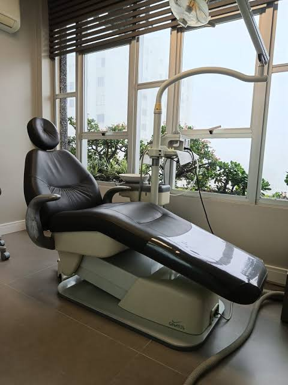
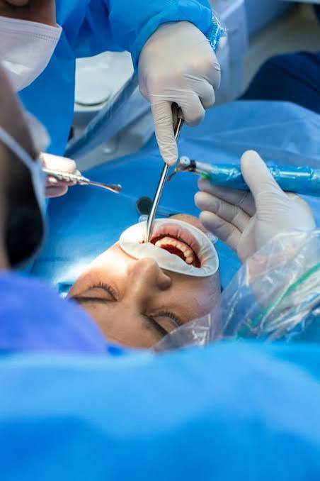
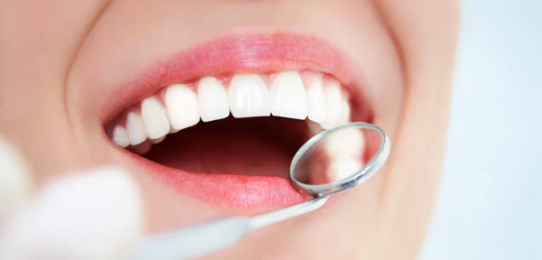

Odontologia é a ciência que estuda a saúde
bucal, incluindo dentes,
gengivas e estruturas relacionadas. Ela abrange a
prevenção,
diagnóstico e tratamento de doenças e
condições que afetam a boca e os dentes.
Os profissionais da odontologia,
conhecidos como dentistas, desempenham
um papel crucial na manutenção da saúde
oral e no bem-estar geral dos pacientes.



Escovação: Escove os dentes pelo menos duas a três vezes ao dia (especialmente ao acordar e antes de dormir) usando uma escova de cerdas macias e creme dental com flúor. Lembre-se de escovar também a língua. Fio dental: Utilize o fio dental diariamente (preferencialmente à noite) para remover restos de comida e placa bacteriana entre os dentes. Troca da escova: Substitua a escova dental a cada 3 meses ou assim que as cerdas estiverem desgastadas. Alimentação: Reduza o consumo de açúcares e bebidas ácidas, que favorecem o surgimento de cáries.